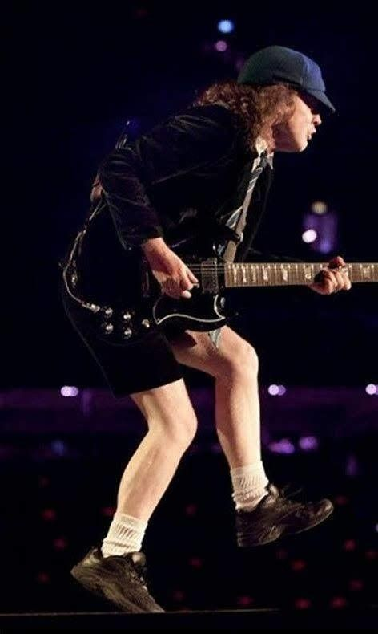

Biografia
El grupo australiano AC/DC se formó en 1973, gracias a dos hermanos escoceses, Malcolm y Angus Young. El nombre del grupo, con connotaciones eléctricas, son las iniciales en inglés de Corriente alterna/ Corriente continua. Cuando el grupo se formó Angus apenas tenía 15 años, por lo que alguien le sugirió que se subiera al escenario vestido con el uniforme colegial. A partir de ese momento, aquella fue la enseña de la banda.
En 1974 los hermanos Young se trasladan a Melbourne, donde se unen al batería Phil Rudd y al bajista Mark Evans. Como cantante se les unió Bon Scott, quien ya había participado anteriormente en algunas bandas de pop. Además, Scott aportó a la banda un estilo agresivo de chicos inadaptados que les acompañó a lo largo de su carrera. De esta forma, con la banda ya formada, realizan una gira por Australia, comenzando a trabajar en lo que sería su primer álbum.
En 1975 aparecen en Australia los dos primeros álbumes de AC/DC, titulados "High voltage" y "T.N.T". Un año más tarde firman contrato con la discográfica Atlantic Records, quienes editan "High voltage" para el Reino Unido, un nuevo álbum que mezcla temas de sus dos trabajos en Australia. Ese mismo año publican su primer trabajo propiamente británico, "Dirty deeds done dirt cheap".
En 1977 Evans abandona la banda y es sustituído por Cliff Williams, con quien comienzan publicando el álbum "Let there be rock", que se aupó al número uno de las listas americanas. Parte del éxito se lo deben a sus espectaculares conciertos en directo y a la energía que derrochan sobre el escenario.
En 1978 aparece publicado "Powerage", que precedió al primer gran éxito de la banda, "Highway to hell", un álbum con ventas millonarias y que entró en los primeros puestos de todas las listas, consiguiendo numerosos discos de oro. Poco después del éxito de "Highway to hell", el cantante de la banda, Bon Scott apareció muerto en Londres. AC/DC tuvo que recomponerse, uniéndose a la banda Brian Johnson en el lugar ocupado anteriormente por Scott.
El siguiente trabajo de AC/DC fue "Back in black", en 1980, que llegó a ser número uno en Inglaterra y Estados Unidos, vendiendo más de 10 millones de copias solamente en el país norteamericano. Se calcula que hasta la fecha se han vendido 44 millones del copias del álbum, lo que le colocaría como uno de los más vendidos de la historia. A partir de este momento, los trabajos anteriores de AC/DC comenzaron a venderse como rosquillas, lo que llevó a la banda a aprovechar el tirón en su siguiente disco.
En 1981 aparece "For those about to rock", con el que nuevamente conquistaron el mercado americano. Un año después, el batería Phil Rudd abandona la banda y es sustituído por Simon Wright.
En 1983 se publica "Flick of the switch", con el que AC/DC comienza una etapa menos brillante en su historia. Los siguientes trabajos de la banda siguen con la línea descendente de ventas: "Fly on the wall" y el recopilatorio "Who made who" pertenecen a esta época del grupo.
En 1987 publican "Blow up your video", con el que se lanzaron a una gira en la que Malcom fue sustituído temporalmente por su primo Steve. tras la gira, Wright abandonó el grupo, siendo sustituído por Chris Slade, con amplia experiencia en diversos grupos.
En 1990 aparece un nuevo álbum de AC/DC, titulado "The razors edge", con el que llegan al número dos en las listas americanas, estando situados en listas durante más de un año consecutivo. En 1992 publican un disco en directo, "AC/DC Live".
El siguiente trabajo de la banda aparece en 1995, bajo el título de "Ballbreaker", de nuevo con Phil Rudd incorporado al grupo. El disco fue un enorme éxito, vendiendo varios millones de copias y estando en puestos preferentes en las listas de Estados Unidos.
En 1997 publican una caja con cinco CD's, como homenaje al fallecido Bon Scott. En el año 2000 publican el álbum "Stiff upper lip", grabado en el estudio de Bryan Adams en Canadá. Para promocionar este disco realizaron una gira por innumerables países, entre ellos España. Precisamente, los hermanos Young estuvieron en la localidad madrileña de Leganés, para inaugurar una calle que lleva su nombre. Se da la circunstancia de que la placa que lleva el nombre de la calle fue robada el mismo día de la inauguración.
En Octubre de 2008, rompiendo un silencio de 8 años, AC/DC regresa a los estudios de grabación para publicar un nuevo trabajo, titulado "Black ice". El álbum contiene 15 nuevas canciones, entre las que destaca su primer single 'Rock 'n' Roll train'.
Integrantes
- Brian Johnson: Vocalista, (1980-2016; 2020-presente)
- Angus Young: Guitarra solista, (1973-presente)
- Stevie Young: Guitarra rítmica, coros (1988; 2014-presente)
- Cliff Williams: Bajo eléctrico, coros (1977-2016; 2020-presente)
- Phil Rudd: Batería, percusión (1975-1983; 1995-2015; 2020-presente)
Brian Johnson
Brian Francis Johnson De Luca (Dunston, Staffordshire, 5 de octubre de 1947) es un cantante y compositor británico. Es conocido por ser el tercer vocalista de la banda británica-australiana de hard rock AC/DC. Fue elegido para reemplazar a Bon Scott tras su muerte en 1980. Su primer álbum como vocalista de AC/DC fue Back In Black. Está situado en el puesto número 39 en la lista de los 100 mejores vocalistas de metal de todos los tiempos de la revista Hit Parader.
Brian con AC/DC Viaja a Londres para una prueba para una banda que nadie le había dicho quienes eran. La banda AC/DC buscaba un cantante tras la muerte de Bon Scott en 1980. Tras unos momentos de confusión en un pub jugando al billar y bebiendo Newcastle Brown Ale, la banda se encerró en la sala de ensayos para comprobar cómo funcionaban las cosas. El 8 de abril se anunció oficialmente, Brian Johnson era el nuevo cantante de AC/DC.
Su primer álbum como cantante de la banda fue Back In Black. Durante todo abril y mayo de 1980 el grupo estuvo grabando una canción tras otra. Un clásico tras otro. El buen ambiente que se vivía en él y las ganas de grabar algo grande fueron determinantes para ello. Desde la primera canción que grabaron, You shook me all night long, quedó claro que la autoridad en la banda correspondía a Malcolm, incluso por encima de Lange y Platt.
Grabó varios éxitos en su primer álbum, Back In Black, como "You Shook Me All Night Long", "Hells Bells" o la canción que le da nombre al álbum, "Back in Black". Más tarde consiguieron éxito con "Thunderstruck", "Moneytalks" o "Are You Ready" que se incluyen en el disco The Razors Edge. Tres décadas después y casi cincuenta millones de copias vendidas en todo el mundo, Back in black, convertido en todo un clásico y en el mejor homenaje de la banda a su fallecido cantante, quedó claro que la elección de Brian Johnson fue, es y será la mejor opción del grupo para seguir adelante.
El grupo se consolidó como uno de los mejores cantantes de la historia. A comienzos de octubre de 2008 la legendaria banda australiana grabó el álbum "Black Ice" en el que se puede apreciar a un Brian Johnson cantando como siempre y pudiéndose también apreciar que su voz está intacta teniendo así agudos únicos en canciones tales como "Decibel", "Rock 'n' Roll Train" y "Skies on Fire".
En una entrevista realizada por la revista Classic Rock dejó claro que luego de culminada la gira Black Ice World Tour se retiraría de los escenarios de manera definitiva el 11 de mayo del 2011 debido a su edad.
Angus Young
 Angus McKinnon Young (Glasgow, Escocia, Reino Unido, 31 de marzo de 1955) es un músico británico nacionalizado australiano, conocido por ser uno de los miembros fundadores y el principal guitarrista del grupo AC/DC, aparte de ser el único miembro que ha permanecido en la banda desde su inicio. Fue introducido en el Salón de la fama del Rock and Roll junto a los miembros actuales de la banda en el 2003. Es conocido por sus salvajes y enérgicos movimientos en el escenario, y su peculiar uniforme de colegial. Además, en el año 2014 se situó entre los mejores guitarristas de todos los tiempos, concedido por la revista Rolling Stone, y en el puesto 24 en una nueva edición de 2011 de los 100 mejores guitarristas de todos los tiempos, también por la revista Rolling Stone, y en el puesto número 20 de la lista "los 100 mejores guitarristas", de la revista Total Guitar.
Angus Young es el más joven de los ocho hijos de William y Margaret Young, se mudó a Sídney en Australia en 1963 con sus hermanos adoptados Malcolm, George y Alex, que se convirtieron en músicos y su hermana Margaret. Angus empezó a jugar con banjos. La primera SG de Angus fue comprada de segunda mano a finales de los 60s, de una tienda de música en la misma calle de su casa.
Malcolm recibieron clases de guitarra de su hermano George, miembro del grupo The Easybeats. Fue expulsado del colegio durante la primaria por sus malos comportamientos. Sus primeros años en un grupo fue en el grupo de su hermano mayor Malcolm, entrando en los locales donde tocaban (todavía era menor) gracias a que el grupo decía que era enano. Antes de la formación de AC/DC, Young tocó con un grupo local llamado Kentuckee (más tarde cambiarían el nombre a Tantrum).
Angus, con 18 años de edad, junto a su hermano Malcolm crearon en 1973 el grupo AC/DC. La primera formación de la banda contó con Malcolm Young en la guitarra rítmica, Phil Rudd en la batería, Mark Evans al bajo más tarde será remplazado por Cliff Williams, y Dave Evans el cantante quien fue remplazado en 1974 por Bon Scott quien murió en 1980 a causa de una intoxicación etílica, que después lo remplazó Brian Johnson.
Después de tocar un tiempo con el grupo, Young adoptó su imagen con el uniforme de escolar. La historia se remonta a la formación del grupo, en la que Angus todavía estaba estudiando, y cuando terminaba las clases, se iba directamente a ensayar con su grupo sin cambiarse de ropa. Angus y Malcolm buscaban una puesta en escena que impactara, junto con su música, al público. Margaret, hermana de Angus y Malcolm, sugirió que en las actuaciones en vivo Angus continuara vistiendo el uniforme escolar ya que ella decía que Angus se comportaba como un niño. En las primeras actuaciones de AC/DC, Angus apareció vestido con una gran variedad de disfraces (disfrazado de gorila, de Superman, de Zorro y de Spiderman). Era la época del Glam rock y ya estaba de moda que los músicos de rock se disfrazasen durante sus actuaciones. Desde 1974, Angus probó varios disfraces, incluyendo los de El Zorro, Superman (como 'SuperAng') y el de gorila. La vestimenta escolar se acabaría convirtiendo en la firma de la banda, junto al "Andar de Pato" de Angus, homenajeando al guitarrista Chuck Berry, del que Angus es un gran fan. En los conciertos, siempre enseñaba su ropa interior donde llevaba la bandera del país en el que se encuentran, después de un breve strip tease cómico. Sus movimientos, a pesar de los enérgicos que son, no afectan su talento con la guitarra y no han impedido que se convierta en uno de los mejores guitarristas de la historia.
Stevie Young
Stevie Young (Glasgow, Escocia, 11 de diciembre de 1956) es un músico británico conocido por ser miembro de la banda AC/DC hijo de Steven Young y sobrino de Angus Young y Malcolm Young de AC/DC y de los también músicos George Young y Alex Young. Su instrumento es la guitarra rítmica.
Su carrera musical empezó a finales de los 70 con las bandas 'The Stabbers', 'Prowler' y 'Tantrum', formadas en la ciudad de Hawick al sur de Escocia. En 1980 fundó 'Starfighters', su banda más conocida, la cual adquirió cierta notoriedad a los pocos meses de su formación debido a que fueron escogidos por AC/DC para telonear su gira británica de presentación de Back In Black en octubre/noviembre de 1980. Acto seguido, 'Starfigthers' firmaron un contrato con la compañía Jive Records, con la cual grabarían 2 LP de estilo Hard Rock y producidos por Tony Platt. Sin embargo, la banda no consiguió la repercusión esperada y se disolvió en 1983, aunque regresaron fugazmente a escena 4 años después con resultados igualmente desfavorables.
No obstante, en 1988 Stevie volvió al primer plano de la actualidad al sustituir a su tío Malcolm en la gira norteamericana Blow Up Your Video de AC/DC, debido a que éste decidió abandonar temporalmente la actividad en vivo para solucionar sus problemas con el alcohol. Así pues, Stevie actuó con AC/DC durante todo el tour americano de la banda desde el 3 de mayo hasta el 13 de noviembre de 1988. Muchos fanes ni siquiera notaron la ausencia de Malcolm debido al gran parecido físico entre ambos.
Tras su periplo temporal con AC/DC, Stevie Young formó 'Little Big Horn', cuya primera maqueta fue producida por el propio Malcolm, pero este nuevo proyecto se vio frustrado al no conseguir un contrato discográfico, aunque antes de ello tuvieron la oportunidad de grabar una actuación para el famoso programa Friday Rock Show de Tommy Vance en la BBC Radio 1.
Más tarde Stevie creó 'Uprising' y tras la disolución de esta banda formó parte de otros grupos como 'Hellsarockin' y el trío de blues 'Blue Murda', hasta que en mayo de 2014 volvió a reunirse con AC/DC para participar en la grabación de su nuevo disco de estudio, nuevamente en sustitución de su tío Malcolm, quien tuvo que ausentarse de dicha grabación por motivos de salud. Debido a que Malcolm ya no podría volver a tocar, esta vez la sustitución fue permanente y de este modo Stevie se convirtió en miembro fijo de AC/DC y actuó con ellos en toda la gira mundial 2015-2016
Cliff Williams
Clifford Williams (nacido el 14 de diciembre de 1949) es un músico inglés, más conocido como el bajista y vocalista de apoyo de la banda australiana de hard rock AC/DC. Comenzó su carrera musical profesional en 1967 y había estado anteriormente en los grupos ingleses Home y Bandit.
Su primer álbum de estudio con AC/DC fue Powerage en 1978. Williams fue introducido en el American Rock and Roll Hall of Fame como miembro de AC/DC en 2003.
Williams anunció su retiro de AC/DC en 2016, pero regresó para su álbum Power Up 2020, junto con los compañeros de banda Brian Johnson y Phil Rudd. Sus proyectos secundarios incluyen conciertos de beneficio.
En 1972, tras que Bandit no tuvo suerte, recibió una llamada de su amigo, Jimmy Lidleland, quien tenía una banda llamada Coliseum. Jimmy le dijo que AC/DC estaba buscando un bajista, después de la salida de la banda por parte de Mark Evans durante el tour de Let There Be Rock. Cliff se presentó a las audiciones y a Angus le gusto su estilo hard rock y, además, creyó que su aspecto físico atraería público femenino. Se unió a fines de año y desde entonces está en la banda.
Su primer disco con AC/DC fue Powerage. En una entrevista a la revista Bass Frontiers asegura que este es su álbum favorito. El álbum fue producido por Harry Vanda y George Young. Pasaron 3 semanas en el estudio para grabar lo que sería el nuevo disco. Su primer tour fue con Aerosmith, de banda telonera, y su primer tour oficial fue en 1979 con el lanzamiento del recordado Highway To Hell. Tras la muerte de Bon Scott y la llegada de Brian Johnson, Back In Black, alcanzó un éxito inesperado. Cliff dice en su entrevista a Bass Frontiers, que muchas de sus canciones favoritas se encuentran en este disco.
Fue reemplazado temporalmente por Paul Greg durante la gira mundial de 1991.
A finales de la gira de Rock or Bust se confirma que abandona la banda porque según dice, la banda ha sufrido muchos cambios durante los últimos años.
En octubre de 2020 se confirma su reincorporación a la banda mediante la llegada del nuevo Álbum "Power Up" contando con Cliff en el bajo.
Phil Rudd
Phil Rudd (Melbourne, 19 de mayo de 1954) es un baterista australiano de hard rock. Conocido por ser el baterista de AC/DC, es considerado el baterista original de la banda; junto con Cliff Williams y los hermanos Young conforma la formación clásica del grupo. Su etapa en AC/DC comprende desde 1975 a 1983, posteriormente desde 1994 hasta 2014 y Desde octubre de 2020 a día de hoy. Desde la salida del grupo por parte de Mark Evans, se convirtió en el único integrante australiano del grupo. Junto con los hermanos Young, Cliff Williams y Brian Johnson, ingresó al Rock and Roll Hall of Fame, en 2003. La revista Rolling Stone, lo ubicó en el puesto N°86 en la lista de Los 100 Mejores Bateristas de la Historia. Ha vuelto oficialmente a AC/DC con el anuncio del álbum Power Up que fue lanzado el 13 de noviembre de 2020.
Phil se unió a AC/DC en 1975. En 1979 el grupo tuvo un gran éxito con el lanzamiento de Highway to Hell, álbum en el que se insistió en alcanzar un mejor sonido en la sección rítmica. Al empezar a grabar su séptimo álbum, muere el cantante Bon Scott en febrero de 1980, pero la banda siguió trabajando en nuevos temas independientes al álbum que estaban grabando en aquel momento, y empezando a grabar otro, contratando al vocalista Brian Johnson, y en Bahamas acabaron con la grabación del Back in Black, que se convertiría en el segundo álbum más vendido de la historia. En 1983 Phil grabó las pistas de batería de Flick of the Switch y se retiró en Nueva Zelanda.
Muerte de Bon Scott (1980)
Cuando todo parecía ir muy bien (tenían éxito de ventas en Europa y los Estados Unidos) y acababan de empezar a grabar un nuevo disco (del cual nunca se publicó ningún tema), la desgracia les cayó una noche en la que estaban parando en Londres. Ese 19 de febrero de 1980 perdieron a su vocalista. La causa de su fallecimiento fue una intoxicación etílica.
Scott bebió de más en un club nocturno de Londres llamado «MusicMachine» (conocido como «Camden Palace», y luego renombrado como «The KOKO»). Su íntimo amigo Alistair Kinnear lo llevó a descansar en su automóvil, estacionado frente al número 67 de Overhill Road in East Dulwich, en la zona sur de la ciudad. A la mañana siguiente, Kinnear llevó a Scott al hospital King's College en Camberwell, donde fue declarado muerto por intoxicación etílica. La tradición oral dice que se ahogó con su propio vómito, lo que fue desmentido por el mismo Kinear años después en una revista de rock la cual figura su nombre en la biografía de AC/DC escrita por Susan Massino.
La familia de Bon Scott despidió sus restos en el cementerio de Fremantle, (Perth), el lugar a donde habían emigrado durante la infancia de Bon.
Fotos

Discografia
- T.N.T (1975)
- High Voltage(1975)
- Dirty Deeds Done Dirt Cheap (1976)
- High Voltage(1976)
- Let There Be Rock(1977)
- If You Want Blood You've Got It (1978)
- Powerage (1978)
- Highway to Hell(1979)
- Back in Black (1980)
- For Those About to Rock We Salute You (1981)
- Flick of the Switch (1983)
- ´74 Jailbreak(1984)
- Fly on the Wall (1986)
- Who Made Who(1986)
- Blow up Your Video (1988)
- Fly on the Wall (1986)
- The Razor's Edge (1990)
- Live(1992)
- Ballbreaker (1995)
- Let There Be Rock: The Movie - Live in Paris (1997)
- Stiff Upper Lip (2000)
- Black ice (2008)
- Rock or Bust (2014)